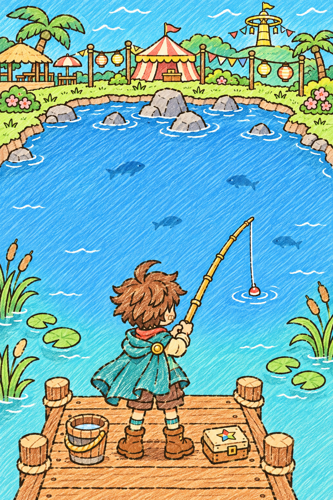
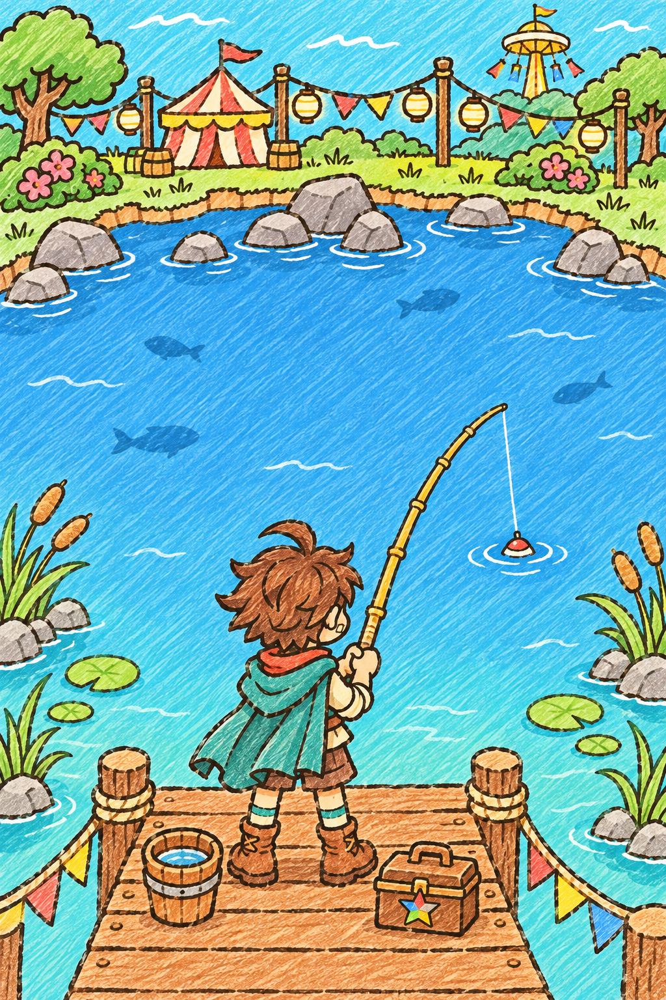
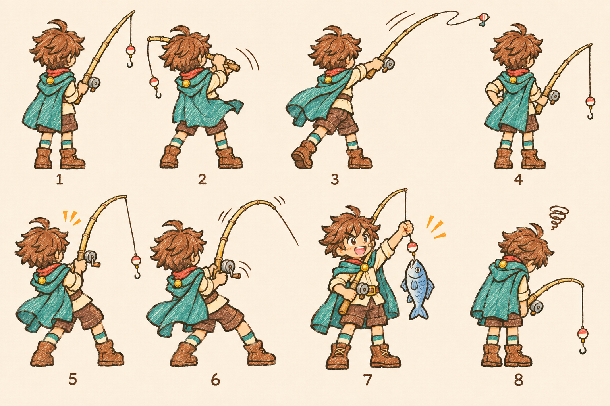

Magnific GPT 2.6, 1k high, 95 credit / tờ. Ảnh mẫu nét: world_style.png + tờ nhân vật chính đã duyệt. Đây là ảnh ghép để chốt bố cục; bản dùng trong game sẽ gen theo lớp (nền không người, mặt nạ nước cho shader, lớp trước), nhân vật rig riêng.

Cảnh A: dừa, chòi lá, ô dù; hồ rộng hơn, bến gỗ ngắn; lá súng và lau sậy hai bên gần bến; rạn đá giữa bờ xa.

Cảnh B: cây tán tròn, thùng gỗ; dây cờ trên lan can bến; đá viền quanh bờ; cậu nhỏ hơn một chút, hồ trông sâu hơn.

Tờ dáng nhân vật (dùng cho rig, 8 clip): 1 đứng cầm cần · 2 kéo cần ra sau (ngắm) · 3 vung quăng · 4 đợi, tay chống hông · 5 giật · 6 ghì kéo, cần cong · 7 quay lại giơ cá · 8 hụt, xụ vai.